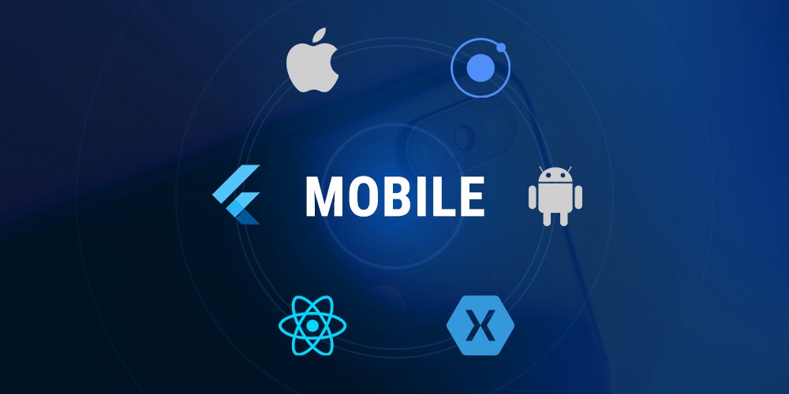

How Web Frameworks are Changing the Mobile and Web Landscape

Today's digital landscape is evolving and growing day by day. Software applications no longer have to be native applications. Developers can use frameworks and libraries to build applications for desktop, mobile and web. Sometimes doing this even with the same single codebase. Frameworks have allowed this process to become popular within the development community. In this blog I will explore what frameworks are and, more importantly, how they are aiding developers make better software.
What are frameworks?
Frameworks are platforms for developing software. They take complex functionality and abstract that functionality, making it easier for the developers to create. This allows developers the ability to take generic framework functionality and specify it for their application needs. Applications using frameworks are built by creating many components that work together. There are thousands of frameworks for just about every mainstream language used.
Helpful definitions
I have included some definitions here to help in understanding some concepts talked about in this post. This will also help differentiate between different types of applications because they can be confusing.
Components
A component is an individual piece of the overall user interface that is structured in a way that can be reused. Components are very similar to a JavaScript functions but instead they return HTML that is displayed.
Native Applications
Native Applications are created using a device's native language for a specific platform and sometimes a specific device. Since these applications are developed for specific devices they have significant access to the device's hardware. Even though these applications can run across many devices running the same operating system. These types of applications are not cross-platform to other devices running different operating systems. For example, in order to use an iOS application on Android, you would need to develop a clone of the iOS application in the native coding language for Android.
Web Applications
Web applications are essentially websites that have been designed to adapt for mobile when opened on mobile devices. These types of applications do not have any more access to device hardware then a website does.
Progressive Web Applications
PWA's are basically a website that has been designed to feel native but it still runs using the web. They do have access to the some of hardware on a device but do not have the control that native or hybrid applications have. These types of application are cross platform because they use the web to display content. This means that a PWA will run and look similar across different devices.
Hybrid Applications
Hybrid Applications are similar to Native Applications but instead of using the device's native language, applications are created using web technologies and frameworks. These types of applications are generally cross platform because hybrid apps are built with web frameworks and then are compiled to the native code. Hybrid Applications usually have the same access to device hardware that a native application has. This allows developers that know web technologies to develop a native experience.
Platforms
For this post, a platform is a place where an application can be run. The most common platforms that frameworks are used for are mobile devices, computers and web browsers. Web browsers can run web apps or PWA's. Mobile devices can run native, web PWA's or hybrid apps. Computers can run native, web, PWA's or hybrid apps.
Some advantages and disadvantages to using frameworks
Advantages
Efficiency
Each framework handles functionality differently, but many have features that can create a boilerplate application that developers can use for rapid prototyping. Using a framework's built in functions can be much faster than build everything from scratch. Certain frameworks even can use a single codebase to produce desktop, mobile and web applications. Which makes the process of building applications for separate platforms significantly easier!
Security
Frameworks often have security functionality built in already, in addition to external libraries, that can be used for security of different functionality. For example, the frameworks listed above all have XXS(cross-site scripting) protection built in. The more developers that use a framework, the more the framework is tested, which allow developers to aid in keeping the framework secure.
Cost
Many frameworks are free to use which encourages developers to try them out. Using a software tool that is free helps both the company and the customer by bringing the cost of production for software down. Cost is a major prohibitor to many people within the tech world so it is nice to see that many popular frameworks are open-sourced. Which means that their code is available to view online.
Support
There are many resources for support on frameworks including the official websites, community blogs, YouTube videos, online courses and many more. Anyone can easily find documentation, tutorials and example code on something similar to what they are working towards. The plethora of support makes for a very low barrier of entry for beginners.
Disadvantages
Learn the framework, not the language
A common misconception is that once you learn a framework, you also know the languages used in the framework. This is simply not true and can be seen as a disadvantage for using a framework, but let me explain. HTML, CSS, and JavaScript can be learned in more detail outside of the scope of a framework. For example, if you learn JavaScript through the lens of a framework, you don't actually know javascript in full, you only know how to use it in that framework for that specific application you created. Basically, learning a framework doesn't teach you the languages used in that framework, rather it helps you learn a portions of them.
Limited modification
Since frameworks are used to abstract higher functionality for software, there is only so much customization that a developer can do. All frameworks are "locked down" to a certain degree but some are more flexible than others. If a developer or a team wants functionality that is not what the framework offers, then they should probably not use that framework.
Updates can be troublesome
Frameworks constantly change their functionality and syntax over time. To keep an application built with a framework supported, the application will need to be updated so that it is compliant with the new version of the framework. Updating issues will depend on the size of the application and the dependencies used. Sometimes there is very little to change and sometimes there are heavily used functions that need to be changed. This process is also different for every framework, but generally speaking a well-established framework will not change much of its core syntax.
You must know the framework
Frameworks are a barrier to participation for developers that don't already know it. For a developer to start working on an existing project with a team, that developer needs to already have an understanding of the framework they are using. This often isn't a huge issue, as developers can learn the framework, but it can become a major disadvantage for productivity on a team. If the same project was written in vanilla JavaScript, meaning it was using no outside framework or library, then it would be easier for any developer to jump in and start working on it.
How do frameworks help developers?

Many companies that have a digital presence use some sort of framework. This is mainly because of the advantages that each framework possess, but also because frameworks allow businesses and cheap and fast pathway to make software. Frameworks allow companies to rapidly prototype their product for all types platforms. They can build a product from a single codebase, that can run as a web application and mobile application that is supported on both iOS and Android.
Popular mobile frameworks
Ionic, released in 2013, is a free open-source cross platform UI toolkit for building mobile and desktop applications. The Ionic Framework cna be used with vanilla JavaScript or can be connected to React, Angular or Vue.js as well. This brings a powerful native UI toolkit to other frontend frameworks allowing developers to create hybrid applications from their already existing codebase.
Xamarin, released in 2013, is a free open-source cross platform UI framework used extend .NET for building iOS, Android and Windows Applications. Xamarin uses the tools in the .NET developer platform and adds libraries specific for development across platforms. The framework is owned by Microsoft.
Popular web frameworks

React, released in 2013, owned by Facebook and is the most popular frontend JavaScript framework. Since it is one of the older modern frameworks there are many libraries available to use with React to extend its functionality. A few interesting things to note about React is that its architecture is component based for view only, it uses declarative views and stateful components. Developers does not need to describe how data gets to the view, they just need to describe what the data is. According to React's website, "declarative views make your code more predictable and easier to debug." Using stateful components means that each component can keep track of its own internal state data. This allows for better communication between components and makes programming easier for the developer.
Vue.js, released in 2014, was started and is owned by Even You. Vue brings together many aspects of React and Angular but focuses their core library on the view layer in the frontend. Recently Vue was tested against other frontend frameworks in the JavaScript Frameworks Security Report 2019 provided by snyk. One interesting aspect of Vue is that it bundles the code for the component in one file. This means that the html, css and typescript are all separated out into one component file. Vue is also known to be less complicated for beginner when compared to React or Angular.
Angular, released in 2016, is owned by Google and has been rapidly growing in popularity since its more recent debut. Angular has a very large library and is known as one of the more difficult frameworks to learn for beginners. The structure of an Angular app is very different then React or Vue because in addition to using components it uses a Model, Controller, View structure. This means that it is not just dealing with the view layer but also the model and the controller as well. Angular accomplishes this by separating out the HTML, CSS and Typescript of a specific component into individual files. This separation of files means that there are many more files in a basic project when compared to React or Vue. One thing that Angular is well known for is having robust command-line interface(CLI). The CLI can create boilerplate projects, add pages, and do a lot more!
All of the web frameworks listed above have very helpful websites for getting started. The websites include helpful tutorials, multiple example programs, well written documentation and links to connect with their own developer communities as well. If you are at all interested in getting started with one of these frameworks be sure to check out their website and complete the tutorial on how to build your first app!
References and Resources
Top Cross Platform App Development Frameworks in 2020
The Top JavaScript Frameworks For Front-End Development in 2020